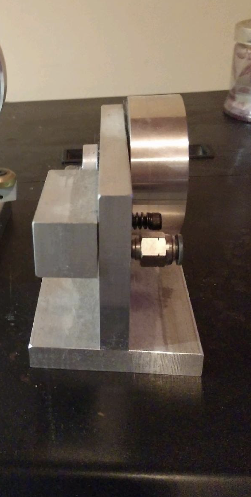

Air Engine
A functional air engine I machined from raw metal as a solo project, learning every machine and tool from the ground up to get there.


What I built
Five precision metal components, machined and assembled into a working air engine. The build applied principles of mechanical linkages, motion transfer, and pneumatics, all held to tight tolerances from engineering drawings.
The learning curve
I walked in having never seen this type of heavy machinery before and walked out knowing how to make the parts, operate each machine and tool, and understand how each one actually behaves. The hardest part was not the cutting; it was the measuring. Holding real tolerances meant practicing accurate measurement until it became expected.
The outcome
An engine that actually runs, built entirely by my own hands from raw stock.
← All projects